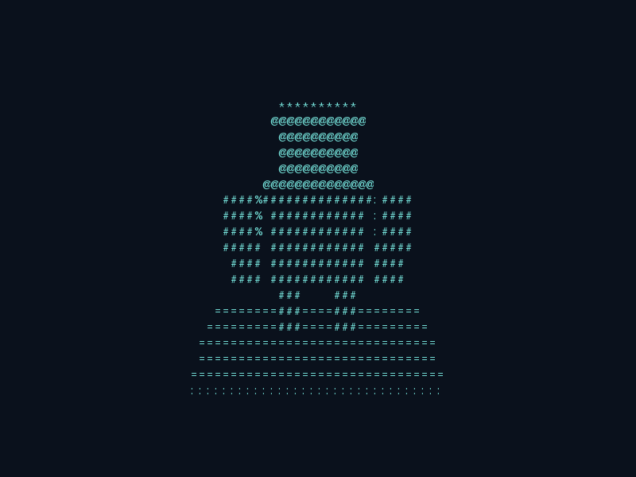
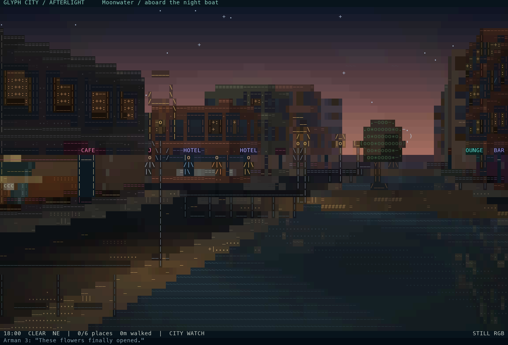

Senior Software Engineer / Tech Lead
AmirHossein Dolati
Senior Software Engineer and Tech Lead with 6+ years of experience building high-performance backend, distributed, and embedded systems with Go and C++. At Injast (Entekhab Group), I lead core fintech services, payment infrastructure, and API gateways, with a focus on system architecture, technical leadership, and AI-assisted development.
C:\> whoami
AmirHossein Dolati
C:\> help
commands: help, detective, about, backend, fintech, leadership, ai, education, blockchain, projects, experience, contact, cv, life, mines, ie, trash, music, code, languages, shutdown, clear
Rules
Live cell with 2 or 3 neighbors survives.
Dead cell with 3 neighbors becomes alive.
All other cells die or stay dead.
Own core fintech products and services while supporting the engineering team. Lead Go development across Exchange, BNPL, SOD, Super App services, payment infrastructure, and the production API gateway.
Design authentication, authorization, API security, service switching, and payment infrastructure. Write Technical Requirements Documents (TRDs) and define service boundaries, interactions, and implementation approaches.
Develop reusable, secure, cheat-resistant token-mining engines for in-app mini-games, enabling users to earn the platform's native currency across multiple games.
Establish AI-assisted development workflows and project-specific AI skills. Re-engineer development deployments to reduce deployment time by approximately 90%, from 15-20 minutes to 1-2 minutes.
Worked on self-driving automotive systems, ADAS, and AUTOSAR-based solutions. Built ROS modules in C++ and Python, RVIZ visualizations, and a node-based LiDAR point-cloud preprocessing library.
Used code generation to improve development efficiency and maintained legacy code for stability and compatibility.
Built C++ client-server file synchronization, node-based encryption/decryption clients, and responsive QML interfaces.
Developed a Qt/QML 6.5 P2P messenger for Android and Windows, integrating Java, C++, and SQLite through a custom QML model. Conducted Kotlin Multiplatform proof-of-concept research.
Developed a packet forwarding service for custom embedded devices and collaborated on human smile detection using an ESP32-CAM board.
Developed an installer with the Qt Installer Framework and a Qt/QML client application. Established efficient inter-process communication between Python and C++ processes.
Developed a multi-user server for real-time voice, text, and GPS delivery across different clients and servers, with thread-safe synchronization and low-latency VoIP communication.
Rebuilt an embedded device UI with LVGL, debugged legacy code, and developed utility tools with Qt and QWidget.
Go and C++ engineering across fintech, distributed systems, embedded software, and AI-assisted development.
Go
C++17
C
Python
MATLAB
QML
Dart
Qt
Flutter
MySQL
AI Agents
AI-assisted Development
Concurrent Programming
Git
Networking
PostgreSQL
SQLCipher
SQLite
VoIP
AUTOSAR
ROS
HMI
Kafka
Fintech
Distributed Systems
Exchange
Open-source / Built by AmirHossein
Play in your browser / Incident response
Production Detective
Investigate three fictional outages with logs, traces, and metrics. Diagnose the failure, apply a fix, and verify recovery.
Worlds made of characters.
Two experiments in terminal graphics: an engine for building scenes and a city that lives on its own.

Rendering library / Python
GlyphForge Engine
Build worlds out of characters. A pure-Python terminal rendering library with 3D triangle meshes, moving cameras, atmospheric grid scenes, and colored ASCII graphics.
Depth testing, OBJ/MTL loading, truecolor output, and ANSI, HTML, SVG, and text exports. No runtime dependencies.

Living city / Python
Glyph City: Afterlight
A living ASCII city that keeps running without keyboard input. Watch autonomous residents go about their day, or take control in first-person walking mode.
Six districts, furnished shop windows, day/night lighting, weather, canal reflections, cinematic City Watch, and photo mode.
Original animated captures from each project's renderer. Both projects run locally in a terminal; these previews show their output.
Also built / Developer tools
View on GitHub
PurgeLog
An offline log sanitizer with a CLI, settings TUI, local browser GUI, and reusable JavaScript library. Redacts sensitive values while preserving useful debugging context. Detection is best effort; review output before sharing.
More engineering work
Core Fintech Services
Technical leadership and Go development for Exchange, BNPL, SOD, Super App services, and payment infrastructure at Injast.
API Gateway & Security
Production API gateway, authentication, authorization, API security, and service switching across the platform.
Reusable Token-Mining Engines
Secure, cheat-resistant engines that let users earn the platform's native currency across multiple in-app mini-games.
Development Deployment Workflow
Reduced deployment time by approximately 90%, from 15-20 minutes to 1-2 minutes, and established AI-assisted development workflows.
P2P Messenger
Cross-platform Android and Windows messenger with Qt/QML, SQLite, Java, and C++ integration.
Real-Time Delivery Server
Multi-user low-latency server for voice, text, and GPS delivery with thread-safe synchronization.
ADAS Tooling
ROS/RVIZ modules, LiDAR preprocessing, and C++/Python tooling for self-driving automotive systems.
shaster of shutter
Now Playing
Track 01
shaster-of-shutter.mp3
00:00
Stopped
-- INSERT --vim98.cpp0 LOC
// Click here and type anything. Code.exe will translate panic into C++.
010
000
Left click reveals. Right click flags. The resume survives if you avoid production mines.
VPN: disconnected
Cannot display this page
This site is filtered in your region.
Try connecting VPN, changing DNS, waiting three business years, or asking the packets politely.
Done, but not really.
Master of Data Science
Payame Noor University / Oct 2025 - Present / Tehran, Iran.
Bachelor of Computer Science
Azarbaijan Shahid Madani University / Sep 2018 - Jun 2023 / Tabriz, Iran.
Final grade: 3.2/4. Thesis: open-source VoIP application written in C++/Qt/QML.
Installed Localization Packs
Persian / fa-IR
Native driver loaded. Zero missing DLLs.
English / en-US
C1 listening, reading, and writing. B2 spoken production and interaction.
Packets can cross teams, docs, specs, code reviews, and production incidents.
Let's build something fast, reliable, and slightly nostalgic.
Based in Tehran, leading fintech engineering and building reliable backend, distributed, and embedded systems.
_ __ __ ___ ____ _ _ ____
/ \ | \/ |_ _| _ \| | | | _ \
/ _ \ | |\/| || || |_) | |_| | | | |
/ ___ \ | | | || || _ <| _ | |_| |
/_/ \_\ |_| |_|___|_| \_\_| |_|____/
.oO README.NFO / AMIRHD OS 98 Oo.
=================================================
HANDLE
AmirHossein Dolati
ROLE
Senior Software Engineer / Tech Lead
CURRENT PATCH
Injast (Entekhab Group), Oct 2025 - Present:
Go fintech services, Exchange, BNPL, SOD, Super App,
payment infrastructure, API gateway, and security.
Development deployments: 15-20 minutes down to 1-2 minutes.
STACK
Go, C++17, C, Python, Qt/QML, PostgreSQL, Kafka,
distributed systems, ROS, AUTOSAR, AI-assisted development.
BEST COMMANDS
backend fintech leadership music
code languages shutdown cv
NOTES
This desktop is a resume disguised as an old machine.
It boots, sulks, sings, mines, and still knows where the CV is.
TaskStatusMem Usage
Recovered deleted ideas. Some are dangerous, some are just embarrassing.
node_modules_final.zip
bad_tokenomics.xlsx
production_hotfix_3am.tmp
old_vpn_config.pbk
warcraft(dota).exe